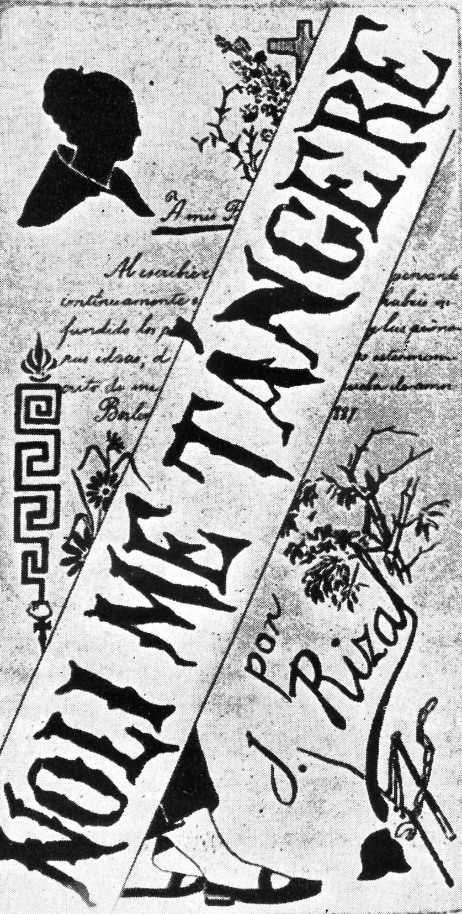

Novels, essays, poems, and ideas
Words that challenged readers.
Rizal wrote novels, essays, poems, and letters. His writing explored the society around him and raised questions about injustice, education, and reform.

Featured novel · 1887
Noli Me Tangere
Published in 1887, this novel portrayed social problems and abuses in Philippine society under Spanish colonial rule. Its title is often translated as “Touch Me Not.”
Second novel · 1891
El Filibusterismo
Rizal’s second novel continued the discussion of injustice and oppression. It explores how social problems can deepen when people are denied justice and dignity.
Beyond the novels
Essays, poems, and letters
Rizal also wrote essays, poems, and letters. These works reflected his thoughts on education, public life, and responsible citizenship.